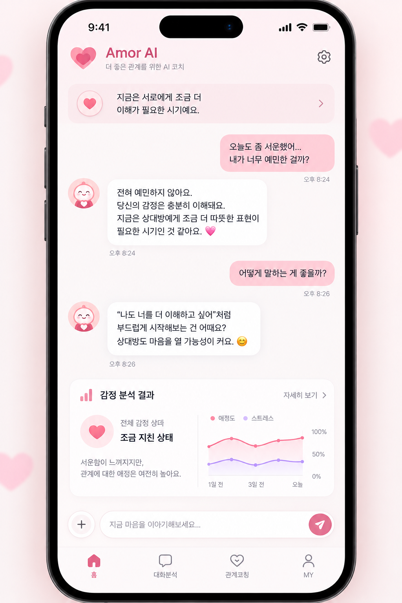

당신의 연애를 이해하는 AI 대화 코치
Amor AI는 대화 내용을 분석해 상대방의 마음을 이해하고, 더 나은 관계를 만들어갈 수 있도록 맞춤형 조언을 제공하는 AI 연애 코칭 서비스입니다.
대화 내용을 붙여넣으면 AI가 두 사람의 감정 흐름을 분석해 리포트로 보여줘요.
예시 리포트 · 설렘 72% · 불안 18% · 서운함 10%
지금 상황을 고르면 어울리는 답장을 추천해 드려요.
관계를 더 좋게 만드는 AI 코칭 팁이에요.
보낼 답장이 고민되나요?
고민을 적고 지금 상황을 고르면, Amor AI가 보낼 답장을 추천해 드려요.
고민을 알려주세요
상황과 답장 톤을 골라주세요
입력한 내용을 확인해 주세요
상황별 예시 실제 대화를 분석한 결과가 아니라, 고른 상황·톤에 맞춘 예시 문장이에요.
상담에서 받은 답장을 저장해 두고, 보낼 때 찾아서 다시 열어 보세요.
열어 본 답장
상황별 예시

새 기능과 연애 코칭 팁을 알려 드려요. 계정이 만들어지는 것은 아니며, 신청한 뒤에도 내용을 수정할 수 있어요.